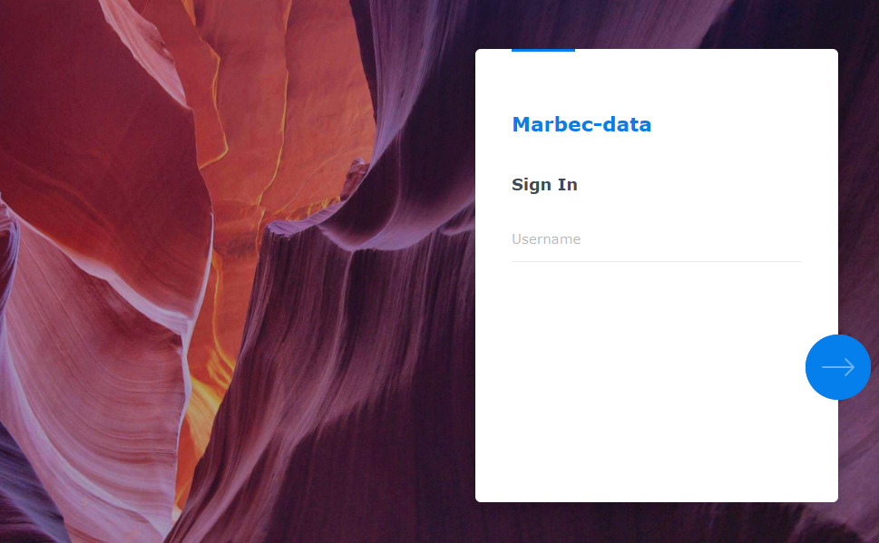
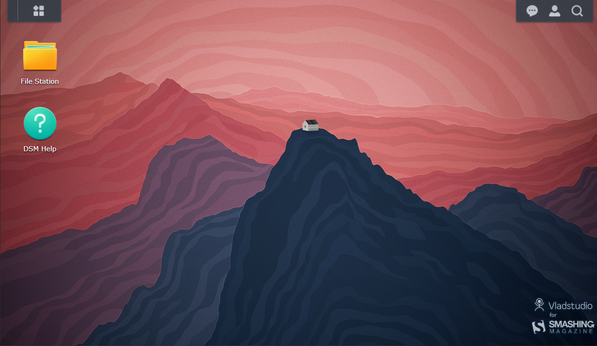
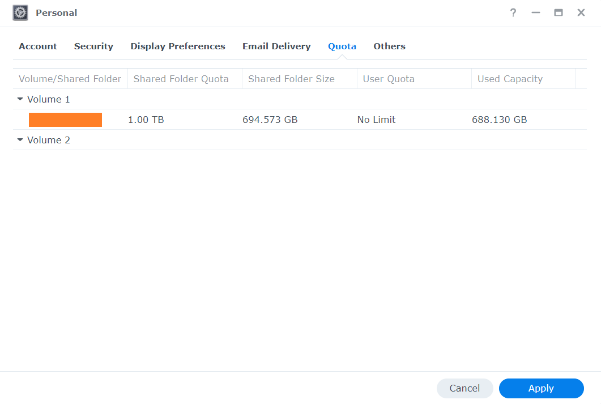
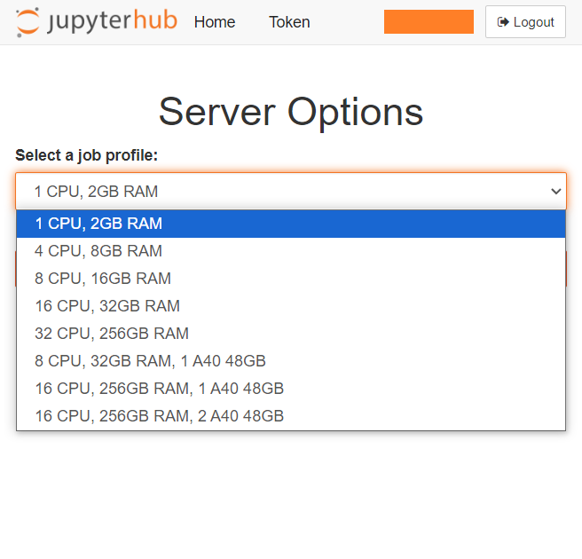

Image credits: Diego Fernandez at Unplash
Introduction to marbec-data and marbec-gpu
What are they? Are they the same?
No. marbec-data and marbec-gpu compose a High-performance computing system. (Very) Basically, it is like having a supercomputer prepared to deal with complex problems. Imagine that, instead of having a single processor (Intel/AMD) working in conjunction with the RAM and storage space of just your computer (e.g. your laptop), you have several computers linked together combining their power to run complex processes. This is how HPC works: it uses multiple computers working together to solve very large computations much faster than a single personal computer could. Marbec HPC is composed of two systems: marbec-data (a Network File System or NFS) and marbec-gpu (a compute cluster).
An NFS is a network protocol that allows multiple devices connected to a network to share files and directories. This allows researchers to store input data, codes and results, but with the advantage of having a centralized backup and the ability to access their files from any machine connected to the cluster. In very simple words and going back to the analogy with your current PC, marbec-data takes the place of the storage (i.e. the hard disk) in the HPC. On the other hand, a compute cluster is, in essence, a set of interconnected computational elements working in a coordinated manner to execute complex computational processes. Within the analogy of your current PC, marbec-gpu equates to: your main processor (CPU), your graphics processor (GPU), general RAM and video RAM. Of course, with these simplifications we are leaving out some important details that we will explain in depth as we need to.
Power of marbec-gpu
Up to October 2024, marbec-gpu has:
- CPU: 4 x [Intel(R) Xeon(R) Platinum 8380 @2.30GHz, 40 physical cores, 80 logical cores]
- RAM: 1.5 TB DDR4
- GPU: 3 x [NVIDIA A40, 48 GB ECC GDDR6 RAM, 10’752 CUDA cores, 336 tensor cores, 696 GB/s bandwidth]
How to access to marbec-data?
This will depend on what we need to do. If we just want to take a quick look at the files and review aspects of our account, we just open a browser window and go to the address https://marbec-data.ird.fr/. This will open a login interface where we just need to enter our credentials (provided by the marbec-gpu administrators).

Once inside, we will see a sort of desktop where we will see a couple of icons to access our shared directories and general documentation on the use of the platform.

¿How to change our password in marbec-data?
We will start by clicking on the user options icon (the one that looks like a little person) at the top right of the desktop and selecting the Personal option.

A small window will open where in the first tab shown (Account), we will have access to Change password option. Likewise, in the Display Preferences tab, we will be able to change aspects such as the interface language or the desktop image and colors.

Check our available space in marbec-data.
From the same Personal window seen in the previous section, in the Quota tab we will be able to verify the storage limit assigned to our user and what has been used so far in each of the folders associated to our user. This is a simple and graphic way to visualize the available space we have left. If at any time we need more space, just request it by e-mail to the marbec-data administrators.

If at any time during the execution of a process the allocated quota limit is reached, the system will block any attempt to save files and this will result in the unplanned termination of the process or errors related to disk write problems.
How to manage files inside marbec-data or between marbec-data and our PC?
We have a post where we develop this point in more detail.
How to access marbec-gpu?
The easiest way to access marbec-gpu is through a browser using the JupyterLab environment. To do this, just open a browser (Chrome, Firefox, Brave, etc.) window and go to https://marbec-gpu.ird.fr/. A window will appear to enter our credentials (NOTE: They are not necessarily the same as those of marbec-data) and then click on the Start my server button. Next, a drop-down menu will appear where we will be able to choose different default configurations of computing power for our session.

Although we indicated a moment ago that marbec-gpu has a good amount of CPUs, GPUs and RAM, this represents 100% of its absolute power and marbec-gpu is a shared service, so it is not possible (allowed) for a single user to monopolize 100% of its capacity. That is why the first choice will consist of deciding what is the power we require for our process. For example, if we want to run an automated process of downloading satellite information, it will be enough to reserve 1 CPU and 2GB of RAM. On the other hand, if our script is only configured (and tested) to use CPU cores, it will not be necessary to reserve those configurations that include GPU. Remember that if you select a very powerful option that you will not take advantage of, it will not be available for someone else who might really need it (choose wisely).
After selecting (and reserving) the resources for our session and clicking Start, a window with the JupyterLab Launcher will appear. In it, we will be able to see the different preinstalled and available applications. The main one will be the Terminal, which is the one we will use to launch (execute) our processes (scripts).

Change password in marbec-gpu.
From the previous step, we will start by opening a Terminal window (by clicking on the corresponding icon) and the window that opens we will type the command passwd (and then Enter). Next, we will be prompted to type our current and new passwords. By default and for security, during the password change process NO cursor is displayed while typing, so it may appear that our keyboard is not working, but this is not the case. You type normally.

It is very important to define strong passwords (alphanumeric with symbols and uppercase-case) and preferably different passwords for the login in marbec-data and marbec-gpu. On the other hand, the JupyterLab environment DOES allow the use of classic shortcuts like Ctrl+C-Ctrl+V (or Cmd+C-Cmd+V in MacOS) to copy-paste character strings, so it is possible to use them during the password change process with the passwd command.
How to run a process on marbec-gpu?
We have a post where we develop this point in more detail.